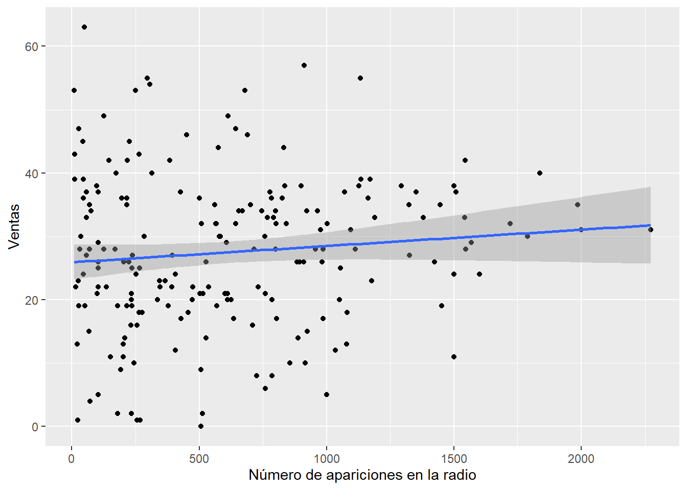
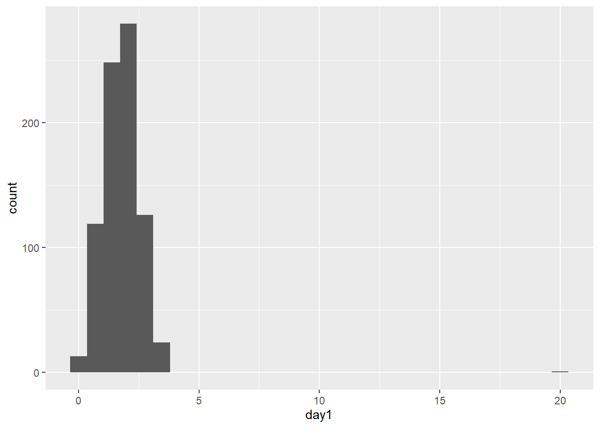
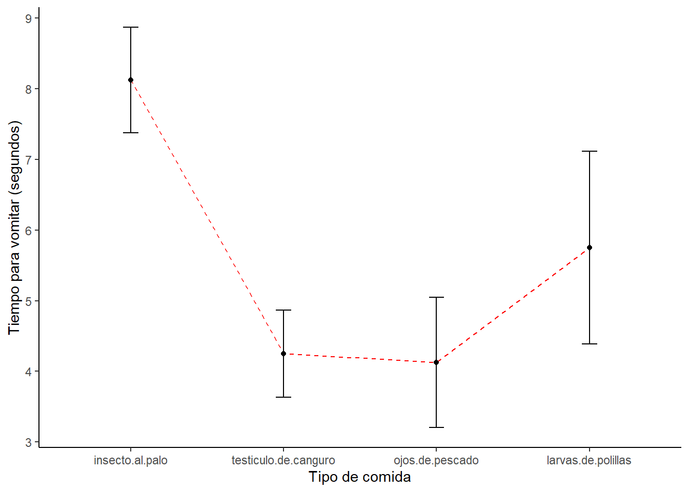
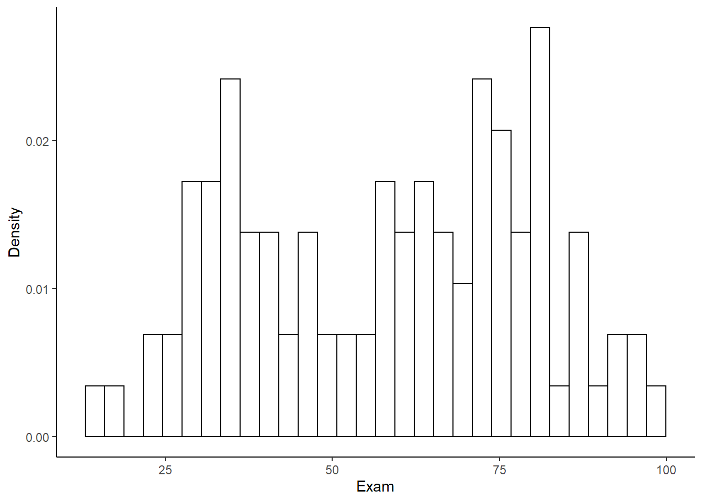
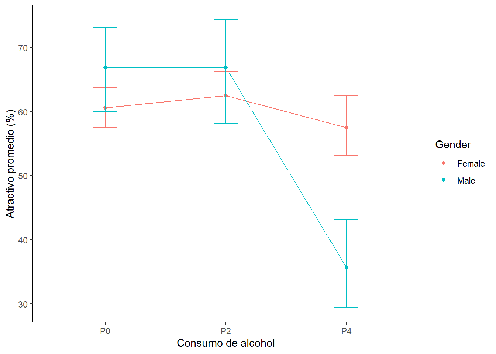
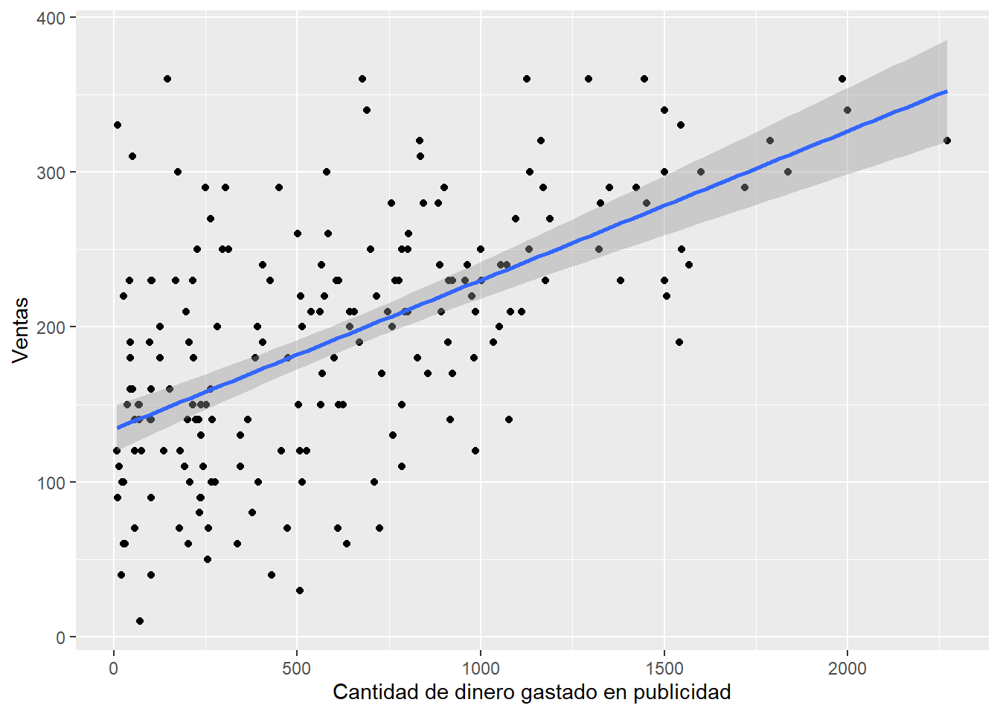
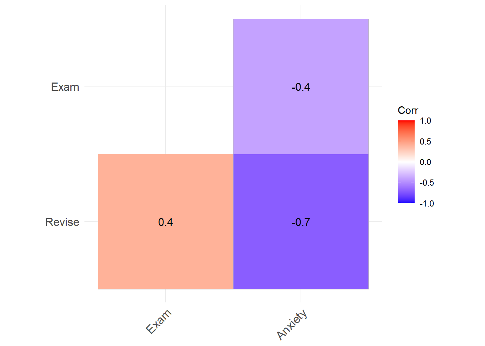

Capítulo 10 Más allá del ANOVA
En este capítulo vamos a revisar que otros tipos de ANOVA podemos realizar.
10.1 Tipos de ANOVA
Revisa este video (13') y trata de responder:
- ¿De qué depende el tipo de ANOVA que utilicemos?
10.2 ANOVA factorial
Ahora vamos a hacer un análisis de ANOVA factorial. Primero seteamos nuestro directorio de trabajo y cargamos las librerías que necesitemos (si no las tienes instaladas debes instalarlas).
setwd("C:/Users/Usuario/Documents/JoseLuis/UTalca_2018/Estadistica_Bookdown/estadistica")
library(ggplot2)
library(Hmisc)
library(Rmisc)
library(effsize)
library(pastecs)
library(reshape2)
library(car)
library(effsize)Primero importamos el set de datos y le damos una mirada.
gogglesData <- read.csv("data/goggle_beer_effect.csv", header = TRUE)
head(gogglesData)## gender alcohol attractiveness
## 1 Female None 65
## 2 Female None 70
## 3 Female None 60
## 4 Female None 60
## 5 Female None 60
## 6 Female None 55Enseguida es útil decirle a R que variables corresponden a factores.
gogglesData$gender <- factor(gogglesData$gender)
gogglesData$alcohol <- factor(gogglesData$alcohol)
str(gogglesData)## 'data.frame': 48 obs. of 3 variables:
## $ gender : Factor w/ 2 levels "Female","Male": 1 1 1 1 1 1 1 1 1 1 ...
## $ alcohol : Factor w/ 3 levels "2 Pints","4 Pints",..: 3 3 3 3 3 3 3 3 1 1 ...
## $ attractiveness: int 65 70 60 60 60 55 60 55 70 65 ...También podemos cambiar el nombre de las variables si nos facilita la tarea de hacer gráficos por ejemplo.
levels(gogglesData$alcohol)[match("None", levels(gogglesData$alcohol))] <- "P0"
levels(gogglesData$alcohol)[match("2 Pints", levels(gogglesData$alcohol))] <- "P2"
levels(gogglesData$alcohol)[match("4 Pints", levels(gogglesData$alcohol))] <- "P4"
str(gogglesData)## 'data.frame': 48 obs. of 3 variables:
## $ gender : Factor w/ 2 levels "Female","Male": 1 1 1 1 1 1 1 1 1 1 ...
## $ alcohol : Factor w/ 3 levels "P2","P4","P0": 3 3 3 3 3 3 3 3 1 1 ...
## $ attractiveness: int 65 70 60 60 60 55 60 55 70 65 ...Fíjate que el nivel base quedó al final.
levels(gogglesData$alcohol)## [1] "P2" "P4" "P0"Necesitamos reordenar los niveles para este factor.
gogglesData$alcohol <- factor(gogglesData$alcohol,
levels = c("P0", "P2", "P4"))
levels(gogglesData$alcohol)## [1] "P0" "P2" "P4"Luego, podemos hacer algunos gráficos para visualizar los efectos. Por ejemplo, podemos hacer un histograma de los valores de atractivo en función del género y del consumo de alcohol.
fig_boxplot1 <- ggplot(gogglesData, aes(alcohol, attractiveness)) +
geom_boxplot() +
facet_wrap(~gender) +
labs(x = "Consumo de alcohol", y = "Atractivo promedio (%)")
fig_boxplot1
Este mismo gráfico, valores de atractivo en función del género y del consumo de alcohol, se puede hacer en formato de líneas.
fig_linesplot1 <- ggplot(gogglesData, aes(alcohol, attractiveness, colour = gender)) +
stat_summary(fun.y = mean, geom = "point") +
stat_summary(fun.y = mean, geom = "line", aes(group= gender)) +
stat_summary(fun.data = mean_cl_boot, geom = "errorbar", width = 0.2) +
labs(x = "Consumo de alcohol", y = "Atractivo promedio (%)", colour = "Gender") ## Warning: `fun.y` is deprecated. Use `fun` instead.
## `fun.y` is deprecated. Use `fun` instead.fig_linesplot1
O en formato de barras.
fig_barplot1 <- ggplot(gogglesData, aes(alcohol, attractiveness, fill = gender)) +
stat_summary(fun.data = mean_cl_normal, geom = "errorbar",
position=position_dodge(width=0.90), width = 0.2) +
stat_summary(fun.y = mean, geom = "bar", position="dodge") +
labs(x = "Consumo de alcohol", y = "Atractivo promedio (%)", fill = "Gender") ## Warning: `fun.y` is deprecated. Use `fun` instead.fig_barplot1
Estos gráfico son muy informativos. ¿Que ves? Una manera de visualizar los efectos que estamos estudiando podemos separar los efectos. Esto es, podemos visualizar los niveles de atractivo en función de un sólo factor.
Por ejemplo, podemos visualizar el efecto del género en los niveles de atractivo. Este efecto corresponde al efecto principal del género.
fig_bargender1 <- ggplot(gogglesData, aes(gender, attractiveness)) +
stat_summary(fun.y = mean, geom = "bar",
fill = "White", colour = "Black") +
stat_summary(fun.data = mean_cl_normal, geom = "pointrange") +
labs(x = "Género", y = "Atractivo promedio (%)") +
scale_y_continuous(breaks=seq(0,80, by = 10))## Warning: `fun.y` is deprecated. Use `fun` instead.fig_bargender1También podemos visualizar el efecto del consumo de alcohol en los niveles de atractivo. Este efecto corresponde al efecto principal del consumo de alcohol.
fig_barbeer1 <- ggplot(gogglesData, aes(alcohol, attractiveness)) +
stat_summary(fun.y = mean, geom = "bar",
fill = "White", colour = "Black") +
stat_summary(fun.data = mean_cl_normal, geom = "pointrange") +
labs(x = "Consumo de alcohol", y = "Atractivo promedio (%)") +
scale_y_continuous(breaks=seq(0,80, by = 10))## Warning: `fun.y` is deprecated. Use `fun` instead.fig_barbeer1
Antes de hacer los análisis propiamente tal podemos describir un poco los datos y evaluar los supuestos de la estadística parámetrica.
describ <- by(gogglesData$attractiveness,
gogglesData$gender, stat.desc)
lapply(describ, round, 2)## $Female
## nbr.val nbr.null nbr.na min max range sum
## 24.00 0.00 0.00 50.00 70.00 20.00 1445.00
## median mean SE.mean CI.mean.0.95 var std.dev coef.var
## 60.00 60.21 1.29 2.68 40.17 6.34 0.11
##
## $Male
## nbr.val nbr.null nbr.na min max range sum
## 24.00 0.00 0.00 20.00 85.00 65.00 1355.00
## median mean SE.mean CI.mean.0.95 var std.dev coef.var
## 60.00 56.46 3.78 7.81 342.35 18.50 0.33describ <- by(gogglesData$attractiveness,
gogglesData$alcohol, stat.desc)
lapply(describ, round, 2)## $P0
## nbr.val nbr.null nbr.na min max range sum
## 16.00 0.00 0.00 50.00 80.00 30.00 1020.00
## median mean SE.mean CI.mean.0.95 var std.dev coef.var
## 62.50 63.75 2.12 4.51 71.67 8.47 0.13
##
## $P2
## nbr.val nbr.null nbr.na min max range sum
## 16.00 0.00 0.00 45.00 85.00 40.00 1035.00
## median mean SE.mean CI.mean.0.95 var std.dev coef.var
## 65.00 64.69 2.48 5.28 98.23 9.91 0.15
##
## $P4
## nbr.val nbr.null nbr.na min max range sum
## 16.00 0.00 0.00 20.00 70.00 50.00 745.00
## median mean SE.mean CI.mean.0.95 var std.dev coef.var
## 50.00 46.56 3.59 7.64 205.73 14.34 0.31describ <- by(gogglesData$attractiveness,
list(gogglesData$alcohol, gogglesData$gender),
stat.desc, basic = FALSE)
lapply(describ, round, 2)## [[1]]
## median mean SE.mean CI.mean.0.95 var std.dev coef.var
## 60.00 60.62 1.75 4.14 24.55 4.96 0.08
##
## [[2]]
## median mean SE.mean CI.mean.0.95 var std.dev coef.var
## 62.50 62.50 2.31 5.47 42.86 6.55 0.10
##
## [[3]]
## median mean SE.mean CI.mean.0.95 var std.dev coef.var
## 55.00 57.50 2.50 5.91 50.00 7.07 0.12
##
## [[4]]
## median mean SE.mean CI.mean.0.95 var std.dev coef.var
## 67.50 66.88 3.65 8.64 106.70 10.33 0.15
##
## [[5]]
## median mean SE.mean CI.mean.0.95 var std.dev coef.var
## 67.50 66.88 4.43 10.47 156.70 12.52 0.19
##
## [[6]]
## median mean SE.mean CI.mean.0.95 var std.dev coef.var
## 32.50 35.62 3.83 9.06 117.41 10.84 0.30También podemos evaluar la homogenididad de varianza.
leveneTest(gogglesData$attractiveness,
gogglesData$gender, center = median)## Levene's Test for Homogeneity of Variance (center = median)
## Df F value Pr(>F)
## group 1 19.979 5.08e-05 ***
## 46
## ---
## Signif. codes: 0 '***' 0.001 '**' 0.01 '*' 0.05 '.' 0.1 ' ' 1leveneTest(gogglesData$attractiveness,
gogglesData$alcohol, center = median)## Levene's Test for Homogeneity of Variance (center = median)
## Df F value Pr(>F)
## group 2 2.3238 0.1095
## 45leveneTest(gogglesData$attractiveness,
interaction(gogglesData$alcohol, gogglesData$gender),
center = median)## Levene's Test for Homogeneity of Variance (center = median)
## Df F value Pr(>F)
## group 5 1.4252 0.2351
## 42Antes de hacer el análisis de ANOVA podemos aprovechar de setear las comparaciones planificadas. ¿Para un diseño de este tipo que comparaciones harías?
Una posibilidad es evaluar el efecto del género. Es decir, comparar hombres versus mujeres. Para hacer esto usamos un dummy coding muy simple. ¿Por qué simple? Porque simplemente comparas uno contra el otro. Fijate en el orden de los niveles en cada factor.
levels(gogglesData$gender)## [1] "Female" "Male"Entonces, puedes crear el siguiente constraste
.M_vs_F <- c(-1, 1)
.M_vs_F## [1] -1 1Otra posibilidad es evaluar el efecto del consumo de alcohol. Es decir, comparar agua versus pint versus 2 pints.Para hacer esto usamos otro dummy coding. Para hacer estos de nuevo nos fijamos en el orden de los niveles en cada factor.
levels(gogglesData$alcohol)## [1] "P0" "P2" "P4"¿Que efectos podríamos querer ver? Por ejemplo, el efecto de ingerir alcohol.
.Non_vs_P <- c(-2, 1, 1)
.Non_vs_P## [1] -2 1 1Otro efecto que podemos estudiar es la diferencia producidad por 1 pint versus 2 pints.
.P2_vs_P4 <- c(0, -1, 1)
.P2_vs_P4## [1] 0 -1 1Una vez que creamos los contraste lo ponemos en un vector.
contrasts(gogglesData$alcohol) <- cbind(.Non_vs_P, .P2_vs_P4)
contrasts(gogglesData$gender) <- cbind(.M_vs_F)Y los inyectamos en las bases de datos.
contrasts(gogglesData$alcohol) <- cbind(.Non_vs_P, .P2_vs_P4)
contrasts(gogglesData$gender) <- cbind(.M_vs_F)Luego puedes verificar para el factor género, y ...
gogglesData$gender## [1] Female Female Female Female Female Female Female Female Female Female Female Female Female
## [14] Female Female Female Female Female Female Female Female Female Female Female Male Male
## [27] Male Male Male Male Male Male Male Male Male Male Male Male Male
## [40] Male Male Male Male Male Male Male Male Male
## attr(,"contrasts")
## .M_vs_F
## Female -1
## Male 1
## Levels: Female Male... consumo de alcohol
gogglesData$alcohol## [1] P0 P0 P0 P0 P0 P0 P0 P0 P2 P2 P2 P2 P2 P2 P2 P2 P4 P4 P4 P4 P4 P4 P4 P4 P0 P0 P0 P0 P0 P0 P0
## [32] P0 P2 P2 P2 P2 P2 P2 P2 P2 P4 P4 P4 P4 P4 P4 P4 P4
## attr(,"contrasts")
## .Non_vs_P .P2_vs_P4
## P0 -2 0
## P2 1 -1
## P4 1 1
## Levels: P0 P2 P4Una vez que hemos seteado nuestros contrastes podemos hacer el modelo y visualizar los resultados. En el modelo tratamos de predecir los valores de atractivo en base al género, el consumo de alcohol y la interacción entre ambos factores. Para ello se usa un simbolo (*) que indica que queremos analizar los efectos principales y el efecto de interacción.
gogglesModel <- aov(attractiveness ~ gender*alcohol, gogglesData)
Anova(gogglesModel, type="III")## Anova Table (Type III tests)
##
## Response: attractiveness
## Sum Sq Df F value Pr(>F)
## (Intercept) 163333 1 1967.0251 < 2.2e-16 ***
## gender 169 1 2.0323 0.1614
## alcohol 3332 2 20.0654 7.649e-07 ***
## gender:alcohol 1978 2 11.9113 7.987e-05 ***
## Residuals 3488 42
## ---
## Signif. codes: 0 '***' 0.001 '**' 0.01 '*' 0.05 '.' 0.1 ' ' 1Si miras los valores de F verás que hay un efecto principal del alcohol y un efecto de interacción género-consumo de alcohol. El efecto principal que tenemos aquí refleja que hay un efecto del alcohol (mira el gráfico). Pero, fíjate que el efecto del alcohol en realidad esta calificado por una interación con el género. Es decir, el efecto del consumo de alcohol sobre los niveles de atractivo no son iguales para los dos géneros. En otras palabras. A la luz de una interacción no tiene sentido interpretar el efecto principal.
¿Qué indican los resultados? Ten en cuenta los resultados estadísticos y el gráfico.
fig_linesplot1
Los resultados muestran que las mujeres mantienen altos estándares en la selección de su pareja sin importar el consumo de alcohol. Los hombres toman 4 pints y terminan con parejas que tienen un menor atractivo. Es decir, ocurre el "goggle bear effect".
Veamos las comparaciones planificadas para revisar mayores detalles.
summary.lm(gogglesModel)##
## Call:
## aov(formula = attractiveness ~ gender * alcohol, data = gogglesData)
##
## Residuals:
## Min 1Q Median 3Q Max
## -21.875 -5.625 -0.625 5.156 19.375
##
## Coefficients:
## Estimate Std. Error t value Pr(>|t|)
## (Intercept) 58.333 1.315 44.351 < 2e-16 ***
## gender.M_vs_F -1.875 1.315 -1.426 0.161382
## alcohol.Non_vs_P -2.708 0.930 -2.912 0.005727 **
## alcohol.P2_vs_P4 -9.062 1.611 -5.626 1.37e-06 ***
## gender.M_vs_F:alcohol.Non_vs_P -2.500 0.930 -2.688 0.010258 *
## gender.M_vs_F:alcohol.P2_vs_P4 -6.562 1.611 -4.074 0.000201 ***
## ---
## Signif. codes: 0 '***' 0.001 '**' 0.01 '*' 0.05 '.' 0.1 ' ' 1
##
## Residual standard error: 9.112 on 42 degrees of freedom
## Multiple R-squared: 0.6111, Adjusted R-squared: 0.5648
## F-statistic: 13.2 on 5 and 42 DF, p-value: 9.609e-08¿Qué vemos? Primero. No hay un impacto del género (gender.M_vs_F).
Segundo. Parece que cualquier cantidad de alcohol afecta la percepción de atractivo cuando se compara con una condición sin alcohol (alcohol.Non_vs_P). Sin embargo, esto no es real. La comparación es significativa porque considera el efecto combinado de 2 y 4 pints, y las 4 pints tiene un efecto que arrastra el efecto total. De hecho si miramos el contraste de 2 versus 4 pints (alcohol.P2_vs_P4) vemos que hay un diferencia entre 2 y 4 pints. El promedio del grupo de 2 pints (64.69) es diferente del promedio del grupo de 4 pints (46.56). Esta diferencia es de -18.13 (46.56 - 64.69). El beta es este valor dividido por el número de grupos involucrados en el contraste (-18.13/2 = 9.06).
Tercero. En las interacciones (gender.M_vs_F:alcohol.Non_vs_P y gender.M_vs_F:alcohol.P2_vs_P4) se evalúan sí los efectos del consumo de alcohol son diferentes entre hombres y mujeres. Sabemos que esta interacción refleja que el efecto del consumo de alcohol depende del género. Al igual que en el punto anterior observamos que hay un diferencia entre consumir 4 pints y 2 pints, pero esto ocurre sólo para los hombres.
10.3 ANOVA de medidas repetidas
Ahora vamos a hacer un análisis un ANOVA de medidas repetidas. Primero seteamos nuestro directorio de trabajo y cargamos las librerías que necesitemos (si no las tienes instaladas debes instalarlas).
setwd("C:/Users/Usuario/Documents/JoseLuis/UTalca_2018/Estadistica_Bookdown/estadistica")
library(ggplot2)
library(Rmisc)
library(pastecs)
library(reshape)
library(ez)
library(multcomp)Primero importamos el set de datos y le damos una mirada.
dat1 <- read.csv("data/insectos_y_tiempo_vomito.csv", header = TRUE)
str(dat1)## 'data.frame': 8 obs. of 5 variables:
## $ participante : chr "P1" "P2" "P3" "P4" ...
## $ insecto.al.palo : int 8 9 6 5 8 7 10 12
## $ testiculo.de.canguro: int 7 5 2 3 4 5 2 6
## $ ojos.de.pescado : int 1 2 3 1 5 6 7 8
## $ larvas.de.polillas : int 6 5 8 9 8 7 2 1Enseguida transformamos los datos de formato wide a long y renombramos las columnas.
dat1.long <- melt(dat1,
id = "participante",
measured = c("insecto.al.palo",
"testiculo.de.canguro",
"ojos.de.pescado",
"larvas.de.polillas"))
names(dat1.long) <- c("participante", "animal", "vomito")Antes de hacer cualquier análisis miramos los datos con un gráfico. Usamos la función summarySEwithin para calcular los estadísticos.
datac <- summarySEwithin(dat1.long,
measurevar="vomito",
withinvars="animal",
idvar="participante")Luego hacemos el gráfico.
ggplot(datac, aes(x=animal, y=vomito, group=1)) +
geom_errorbar(width=.1, aes(ymin=vomito-se, ymax=vomito+se)) +
geom_line(colour = "Red", linetype = "dashed") +
geom_point() +
ylab("Tiempo para vomitar (segundos)") +
xlab("Tipo de comida") +
theme(panel.grid.major = element_blank(), panel.grid.minor = element_blank(),
panel.background = element_blank(), axis.line = element_line(colour = "black"))
Luego podemos tener una descripción de los datos.
test <- by(dat1.long$vomito,
dat1.long$animal,
stat.desc,
basic = FALSE,
norm = TRUE)
lapply(test,round,2)## $insecto.al.palo
## median mean SE.mean CI.mean.0.95 var std.dev coef.var
## 8.00 8.12 0.79 1.87 4.98 2.23 0.27
## skewness skew.2SE kurtosis kurt.2SE normtest.W normtest.p
## 0.27 0.18 -1.21 -0.41 0.98 0.97
##
## $testiculo.de.canguro
## median mean SE.mean CI.mean.0.95 var std.dev coef.var
## 4.50 4.25 0.65 1.53 3.36 1.83 0.43
## skewness skew.2SE kurtosis kurt.2SE normtest.W normtest.p
## 0.05 0.03 -1.66 -0.56 0.94 0.60
##
## $ojos.de.pescado
## median mean SE.mean CI.mean.0.95 var std.dev coef.var
## 4.00 4.12 0.97 2.30 7.55 2.75 0.67
## skewness skew.2SE kurtosis kurt.2SE normtest.W normtest.p
## 0.10 0.07 -1.86 -0.63 0.91 0.37
##
## $larvas.de.polillas
## median mean SE.mean CI.mean.0.95 var std.dev coef.var
## 6.50 5.75 1.03 2.44 8.50 2.92 0.51
## skewness skew.2SE kurtosis kurt.2SE normtest.W normtest.p
## -0.51 -0.34 -1.49 -0.50 0.90 0.29Finalmente, hacemos el análisis de ANOVA de medidas repetidas.
model <- ezANOVA(data = dat1.long,
dv = .(vomito),
wid = .(participante),
within = .(animal),
type = 3,
detailed = TRUE)## Warning: Converting "participante" to factor for ANOVA.model## $ANOVA
## Effect DFn DFd SSn SSd F p p<.05 ges
## 1 (Intercept) 1 7 990.125 17.375 398.899281 1.973536e-07 * 0.8529127
## 2 animal 3 21 83.125 153.375 3.793806 2.557030e-02 * 0.3274249
##
## $`Mauchly's Test for Sphericity`
## Effect W p p<.05
## 2 animal 0.136248 0.04684581 *
##
## $`Sphericity Corrections`
## Effect GGe p[GG] p[GG]<.05 HFe p[HF] p[HF]<.05
## 2 animal 0.5328456 0.06258412 0.6657636 0.04833061 *¿Qué observamos? El modelo sugiere que hay un efecto del tipo de animal sobre el número de vómitos. Sin embargo, el test de Mauchly nos dice que no se cumple el supuesto de esfericidad. Por lo tanto debemos mirar las correcciones (Greenhouse-Geisser [GG] o Huynd-Feldt [HF]).
Luego del análisis de ANOVA podemos evaluar que comparaciones son significativamente diferentes.
pairwise.t.test(dat1.long$vomito,
dat1.long$animal,
paired = TRUE,
p.adjust.method = "bonferroni")##
## Pairwise comparisons using paired t tests
##
## data: dat1.long$vomito and dat1.long$animal
##
## insecto.al.palo testiculo.de.canguro ojos.de.pescado
## testiculo.de.canguro 0.0121 - -
## ojos.de.pescado 0.0056 1.0000 -
## larvas.de.polillas 1.0000 1.0000 1.0000
##
## P value adjustment method: bonferroniFinalmente, también puedes notar que el modelo de ANOVA también describe el tamaño del efecto en forma de ges (generalized eta squared).
10.4 ANCOVA
Ahora vamos a hacer un análisis un ANCOVA. Imagina que estuvimos estudiando el efecto de una droga sobre los niveles de inteligencia de unos individuos (revisa el capítulo sobre ANOVA).
setwd("C:/Users/Usuario/Documents/JoseLuis/UTalca_2018/Estadistica_Bookdown/estadistica")
library(ggplot2)
library(Hmisc)
library(Rmisc)
library(effsize)
library(pastecs)
library(reshape2)
library(car)
library(effsize)
library(effects)
library(multcomp)dat1 <- read.csv("data/inteligencia.csv", header = TRUE)
dat1$Dosis <- factor(dat1$Dosis,
levels = c(1:3), labels = c("Placebo", "Baja", "Alta"))
dat1## Dosis Inteligencia
## 1 Placebo 3
## 2 Placebo 2
## 3 Placebo 1
## 4 Placebo 1
## 5 Placebo 4
## 6 Baja 5
## 7 Baja 2
## 8 Baja 4
## 9 Baja 2
## 10 Baja 3
## 11 Alta 7
## 12 Alta 4
## 13 Alta 5
## 14 Alta 3
## 15 Alta 6# Podemos usar esta función para calcular los estadísticos a través de los participantes.
datac <- summarySE(dat1,
measurevar="Inteligencia",
groupvars="Dosis")
# Luego hacemos el gráfico
ggplot(datac, aes(x=Dosis, y=Inteligencia, group=1)) +
geom_errorbar(width=.1, aes(ymin=Inteligencia-se, ymax=Inteligencia+se)) +
geom_line(colour = "Red", linetype = "dashed") +
geom_point() +
ylab("Niveles de inteligencia") +
theme(panel.grid.major = element_blank(), panel.grid.minor = element_blank(),
panel.background = element_blank(), axis.line = element_line(colour = "black"))
Para el análisis de ANOVA observamos lo siguiente.
m_AOV <- aov(Inteligencia ~ Dosis, data = dat1)
summary(m_AOV)## Df Sum Sq Mean Sq F value Pr(>F)
## Dosis 2 20.13 10.067 5.119 0.0247 *
## Residuals 12 23.60 1.967
## ---
## Signif. codes: 0 '***' 0.001 '**' 0.01 '*' 0.05 '.' 0.1 ' ' 1Según este análisis la droga tiene un efecto en los niveles de inteligencia. Pero ¿qué pasa si tomamos en cuenta otros factores? Por ejemplo, qué pasa si tomamos en cuenta la edad de los participantes o los niveles de inteligencia de sus padres? Las variables continuas que no son parte de una manipulación experimental pero que tienen una influencia en la variable dependiente, se conocen como co-variables y se pueden incluir en un análisis de ANOVA. Cuándo medimos las co-variables y las incluimos en un análisis de varianza lo llamamos análisis de covarianza (o ANCOVA).
En el siguiente ejemplo vamos a analizar el efecto de la droga sobre los niveles de inteligencia considerando además los niveles de inteligencia de uno de sus progenitores.
Primero seteamos nuestro directorio de trabajo y cargamos las librerías que necesitemos (si no las tienes instaladas debes instalarlas).
#
dat2 <- read.csv("data/inteligencia_y_covariable.csv", header = TRUE)
dat2$dosis <- factor(dat2$dosis,
levels = c(1:3),
labels = c("Placebo",
"Low Dose",
"High Dose"))Luego, pasamos los datos a formato long.
restructuredData <- melt(dat2,
id = c("dosis"),
measured = c("inteligencia", "herencia"))
colnames(restructuredData) <- c("dosis", "aspecto", "valor")Luego, podemos hacer algunos gráficos. Por ejemplo, podemos visualizar los niveles de inteligencia en función de la dosis de droga. Al mismo podemos ver como que diferencias hay los niveles de inteligencia heredados.
ggplot(restructuredData, aes(dosis, valor)) +
geom_boxplot() +
facet_wrap(~aspecto) +
labs(x="Dosis", y ="Inteligencia") +
theme(panel.grid.major = element_blank(), panel.grid.minor = element_blank(),
panel.background = element_blank(), axis.line = element_line(colour = "black"))
Podemos observar cómo cambian los niveles de inteligencia individual en función de los niveles de inteligencia de los progenitores. Y podemos ver como cambia estos para los distintos niveles de droga.
ggplot(dat2, aes(herencia, inteligencia, colour = dosis)) +
geom_point() +
geom_smooth(method = "lm") +
labs(x="Inteligencia heredada", y ="Inteligencia evocada por la droga") +
theme(panel.grid.major = element_blank(), panel.grid.minor = element_blank(),
panel.background = element_blank(), axis.line = element_line(colour = "black"))## `geom_smooth()` using formula 'y ~ x'En seguida podemos hacer una descripción de los datos.
as.data.frame(lapply(by(dat2$inteligencia,
dat2$dosis,
stat.desc,
basic = FALSE,
norm = TRUE),
round, 2))## Placebo Low.Dose High.Dose
## median 2.00 4.50 4.00
## mean 3.22 4.88 4.85
## SE.mean 0.60 0.52 0.59
## CI.mean.0.95 1.37 1.22 1.28
## var 3.19 2.12 4.47
## std.dev 1.79 1.46 2.12
## coef.var 0.55 0.30 0.44
## skewness 0.99 0.43 0.43
## skew.2SE 0.69 0.28 0.35
## kurtosis -0.55 -1.48 -0.90
## kurt.2SE -0.20 -0.50 -0.38
## normtest.W 0.76 0.87 0.93
## normtest.p 0.01 0.16 0.39as.data.frame(lapply(by(dat2$herencia,
dat2$dosis,
stat.desc,
basic = FALSE,
norm = TRUE),
round, 2))## Placebo Low.Dose High.Dose
## median 4.00 2.50 2.00
## mean 3.44 3.12 2.00
## SE.mean 0.69 0.61 0.45
## CI.mean.0.95 1.59 1.44 0.99
## var 4.28 2.98 2.67
## std.dev 2.07 1.73 1.63
## coef.var 0.60 0.55 0.82
## skewness 0.22 0.42 0.21
## skew.2SE 0.15 0.28 0.17
## kurtosis -1.47 -1.50 -1.36
## kurt.2SE -0.53 -0.51 -0.57
## normtest.W 0.92 0.92 0.91
## normtest.p 0.40 0.42 0.20Podemos ver el gran promedio de inteligencia evocada por la droga (a travaés de todas las dosis).
as.data.frame(lapply(stat.desc(dat2$inteligencia,
basic = FALSE),
round, 2))## median mean SE.mean CI.mean.0.95 var std.dev coef.var
## 1 4 4.37 0.36 0.73 3.83 1.96 0.45Podemos ver el gran promedio de inteligencia heredada (a travaés de todas las dosis).
as.data.frame(lapply(stat.desc(dat2$herencia,
basic = FALSE),
round, 2))## median mean SE.mean CI.mean.0.95 var std.dev coef.var
## 1 2.5 2.73 0.34 0.69 3.44 1.86 0.68Luego podemos evaluar la homogeneidad de la varianza.
leveneTest(dat2$inteligencia, dat2$dosis, center = median)## Levene's Test for Homogeneity of Variance (center = median)
## Df F value Pr(>F)
## group 2 0.3256 0.7249
## 27Dentro de los supuestos del ANCOVA debemos probar que nuestra variable independiente y la co-variable producen efectos independientes. Es decir, debemos probar que la co-variable no es afectada por la variable independiente.
checkIndependenceModel <- aov(herencia ~ dosis, data = dat2)
summary(checkIndependenceModel)## Df Sum Sq Mean Sq F value Pr(>F)
## dosis 2 12.77 6.385 1.979 0.158
## Residuals 27 87.10 3.226summary.lm(checkIndependenceModel)##
## Call:
## aov(formula = herencia ~ dosis, data = dat2)
##
## Residuals:
## Min 1Q Median 3Q Max
## -2.4444 -1.3646 -0.0625 1.0000 3.5556
##
## Coefficients:
## Estimate Std. Error t value Pr(>|t|)
## (Intercept) 3.4444 0.5987 5.753 4.06e-06 ***
## dosisLow Dose -0.3194 0.8727 -0.366 0.7172
## dosisHigh Dose -1.4444 0.7788 -1.855 0.0746 .
## ---
## Signif. codes: 0 '***' 0.001 '**' 0.01 '*' 0.05 '.' 0.1 ' ' 1
##
## Residual standard error: 1.796 on 27 degrees of freedom
## Multiple R-squared: 0.1279, Adjusted R-squared: 0.06326
## F-statistic: 1.979 on 2 and 27 DF, p-value: 0.1577La inteligencia heredada fue aproximadamente equivalente a través de las tres condiciones de drogas (placebo, dosis baja y alta). Este resultado nos permite decir que es apropiado utilizar la inteligencia heredada como co-variable en el análisis de ANCOVA.
El ANCOVA se realiza como cualquier modelo lineal. Es necesario mencionar que cuando hacemos un modelo, R calcula usa una suma de cuadrados de Tipo I (o sumas secuenciales de cuadrados) por defecto. Esto significa que cualquier predictor ingresado en el modelo se evalúa después de los predictores anteriores en el modelo. Típicamente en los modelos tradicionales se usa una suma de cuadrados de tipo III, dónde los efectos de los predictores se evalúan después que se toman en cuenta todos los otros predictores. Para hacer esto creamos el modelo y luego usamos la función Anova e indicamos que queremos usar la suma de cuadrados de tipo III.
ANCOVA_model <- aov(inteligencia ~ herencia + dosis, dat2)
Anova(ANCOVA_model, type="III")## Anova Table (Type III tests)
##
## Response: inteligencia
## Sum Sq Df F value Pr(>F)
## (Intercept) 12.943 1 4.2572 0.04920 *
## herencia 15.076 1 4.9587 0.03483 *
## dosis 25.185 2 4.1419 0.02745 *
## Residuals 79.047 26
## ---
## Signif. codes: 0 '***' 0.001 '**' 0.01 '*' 0.05 '.' 0.1 ' ' 1¿Cómo se interpretan estos resultados? Lo primero que vemos es que los niveles de inteligencia individuales son modulados por los niveles de inteligencia de los progenitores. Más interesante aún es el segundo resultado, que indica que los niveles de inteligencia son modulados por la dosis de droga, incluso cuando los efectos de los niveles de inteligencia heredados son controlados.
En suma, si hubieramos hecho sólo el ANOVA hubieramos observado lo siguiente:
anovaModel <- aov(inteligencia ~ dosis, dat2)
summary(anovaModel)## Df Sum Sq Mean Sq F value Pr(>F)
## dosis 2 16.84 8.422 2.416 0.108
## Residuals 27 94.12 3.486Pero, evaluando los niveles de inteligencia controlando por los niveles de inteligencia heredada llegamos a una conclusión distinta.
En el modelo de ANCOVA queda por mirar los gráficos.
plot(ANCOVA_model)
¿Qué vemos? El primer gráfico se puede usar para evaluar la homogeneidad de la varianza: si tiene forma de embudo, entonces estamos en problemas. En nuestro caso vemos que la dispersión de puntajes es más amplia en algunos puntos que en otros. Esto implica que los residuales pueden estar distribuidos de forma heteroscedástica.
El segundo gráfico es un gráfico Q-Q que nos informa sobre la normalidad de los residuos en el modelo. Queremos que nuestros residuos se distribuyan normalmente, lo que significa que los puntos en el gráfico deben flotar alrededor de la línea diagonal. En nuestro los puntos se alejan de esta tendencia. Nuevamente, esta no es una buena noticia para el modelo. Estos gráficos sugieren que sería necesario realizar una versión robusta de ANCOVA.
A pesar de los problemas que hayamos detectado, y con el objetivo de hacer un análisis completo del análisis de ANCOVA veremos otros aspectos importantes.
Otro de los supuestos del ANCOVA que debemos probar es que existe una homogeneidad de las pendientes de regresión. Este supuesto significa que la relación entre la co-variable y la variable resultado (en este caso, inteligencia e inteligencia heredada) debe ser similar en diferentes niveles de la variable predictora (en este caso, en los tres grupos de dosis). Para probar esto, necesitamos ejecutar de nuevo un ANCOVA pero incluyendo la interacción entre la co-variable y la variable predictora.
hoRS <- aov(inteligencia ~ herencia*dosis,
dat2)
Anova(hoRS, type = "III")## Anova Table (Type III tests)
##
## Response: inteligencia
## Sum Sq Df F value Pr(>F)
## (Intercept) 0.771 1 0.3157 0.579405
## herencia 19.922 1 8.1565 0.008715 **
## dosis 36.558 2 7.4836 0.002980 **
## herencia:dosis 20.427 2 4.1815 0.027667 *
## Residuals 58.621 24
## ---
## Signif. codes: 0 '***' 0.001 '**' 0.01 '*' 0.05 '.' 0.1 ' ' 1Los efectos de la dosis de droga y la inteligencia heredada siguen siendo significativos, pero lo principal que nos interesa es la interacción. Un valor significativo en esta interacción sugiere que no cumple el supuesto de homogeneidad de las pendientes de regresión.
Para los contrastes planificados podemos hacer algo similar a lo que hemos hecho antes.
.plac_vs_drug <- c(-2, 1, 1)
.high_vs_low <- c(0, -1, 1)
contrasts(dat2$dosis) <- cbind(.plac_vs_drug, .high_vs_low)Una vez que definimos los contrastes los podemos inyectar en la base de datos y luego realizamos el modelo nuevamente.
ANCOVA_model <- aov(inteligencia ~ dosis + herencia, dat2)¿Cómo se interpretan estos resultados? Antes de mirar las comparaciones planificadas es buena idea calcular los promedios ajustados. En este caso en particular queremos saber los promedios de inteligencia en función de las dosis de droga ajustados por los niveles de inteligencia heredados. Para ello usamos la función effect. También podemos acceder a los SE de estos promedios.
adjustedMeans <- effect("dosis", ANCOVA_model, se=TRUE)
summary(adjustedMeans)##
## dosis effect
## dosis
## Placebo Low Dose High Dose
## 2.926370 4.712050 5.151251
##
## Lower 95 Percent Confidence Limits
## dosis
## Placebo Low Dose High Dose
## 1.700854 3.435984 4.118076
##
## Upper 95 Percent Confidence Limits
## dosis
## Placebo Low Dose High Dose
## 4.151886 5.988117 6.184427adjustedMeans$se## [1] 0.5962045 0.6207971 0.5026323A diferencia de los promedios originales, cuando se ajustan los promedios se observa que los promedios de inteligencia para dosis alta y baja son bastante diferentes. Es decir, cuando se ajuste por los efectos de la inteligencia de los progenitores, a medida que aumenta la dosis de droga aumentan los niveles de inteligencia de los individuos.
Veamos los contrastes planificados.
summary.lm(ANCOVA_model)##
## Call:
## aov(formula = inteligencia ~ dosis + herencia, data = dat2)
##
## Residuals:
## Min 1Q Median 3Q Max
## -3.2622 -0.7899 -0.3230 0.8811 4.5699
##
## Coefficients:
## Estimate Std. Error t value Pr(>|t|)
## (Intercept) 3.1260 0.6250 5.002 3.34e-05 ***
## dosis.plac_vs_drug 0.6684 0.2400 2.785 0.00985 **
## dosis.high_vs_low 0.2196 0.4056 0.541 0.59284
## herencia 0.4160 0.1868 2.227 0.03483 *
## ---
## Signif. codes: 0 '***' 0.001 '**' 0.01 '*' 0.05 '.' 0.1 ' ' 1
##
## Residual standard error: 1.744 on 26 degrees of freedom
## Multiple R-squared: 0.2876, Adjusted R-squared: 0.2055
## F-statistic: 3.5 on 3 and 26 DF, p-value: 0.02954En estos contrastes comparamos el efecto de la droga relativo al placebo (contraste 1) y el efecto de la dosis alta versus la dosis baja (contraste 2). Pero, además estos contrates están ajustados por los niveles de inteligencia heredados. ¿Qué vemos? Primero, que hay un efecto de la droga por sobre el placebo. Segundo. No parece haber una efecto de la dosis alta por sobre la dosis baja.
El modelo además nos dice que hay una relación entre los niveles de inteligencia producidos por la droga y los niveles de inteligencia heredados. El beta es ~0.42. Asumiendo los otros factores en igualdad de condiciones, si la inteligencia del progenitor de un individuo aumenta en una 1 unidad, la inteligencia del individuo aumenta en alredor de la mitad. Esto los podemos ver en el siguiente gráfico.
ggplot(dat2, aes(herencia, inteligencia)) +
geom_point() +
geom_smooth(method = "lm") +
labs(x="Inteligencia heredada", y ="Inteligencia evocada") +
theme(panel.grid.major = element_blank(), panel.grid.minor = element_blank(),
panel.background = element_blank(), axis.line = element_line(colour = "black"))## `geom_smooth()` using formula 'y ~ x'Por último, también podemos hacer pruebas posthoc. Para hacer estos análisis en los promedios ajustados debemos usar la función glht.
postHocs <- glht(ANCOVA_model, linfct = mcp(dosis = "Tukey"))
summary(postHocs)##
## Simultaneous Tests for General Linear Hypotheses
##
## Multiple Comparisons of Means: Tukey Contrasts
##
##
## Fit: aov(formula = inteligencia ~ dosis + herencia, data = dat2)
##
## Linear Hypotheses:
## Estimate Std. Error t value Pr(>|t|)
## Low Dose - Placebo == 0 1.7857 0.8494 2.102 0.1089
## High Dose - Placebo == 0 2.2249 0.8028 2.771 0.0265 *
## High Dose - Low Dose == 0 0.4392 0.8112 0.541 0.8516
## ---
## Signif. codes: 0 '***' 0.001 '**' 0.01 '*' 0.05 '.' 0.1 ' ' 1
## (Adjusted p values reported -- single-step method)confint(postHocs)##
## Simultaneous Confidence Intervals
##
## Multiple Comparisons of Means: Tukey Contrasts
##
##
## Fit: aov(formula = inteligencia ~ dosis + herencia, data = dat2)
##
## Quantile = 2.4848
## 95% family-wise confidence level
##
##
## Linear Hypotheses:
## Estimate lwr upr
## Low Dose - Placebo == 0 1.7857 -0.3248 3.8961
## High Dose - Placebo == 0 2.2249 0.2301 4.2197
## High Dose - Low Dose == 0 0.4392 -1.5765 2.4549De este análisis observamos que sólo hay diferencias de inteligencia (cuando controlamos por los efecto de inteligencia heredada) cuando comparamos el placebo y la dosis alta de droga.
10.5 MANOVA
Ahora vamos a hacer un análisis de MANOVA. El análisis de MANOVA se realizar porque el ANOVA lidia más que nada con una variable dependiente. Pero, ¿qué pasa cuando realizamos muchas mediciones?
En el siguiente estudio se aplicaron distintos tratamientos para enfrentar cierto tipo de problemas psicopatológicos. Había un grupo control (NT), y grupos a que se le aplicaron terapia condutual (BT) o terapia cognitivo-conductual (CBT). Además, de estos grupos (que reflejan las variables independientes), se midió la frecuencia de dos cosas: conductas y pensamientos.
Para empezar carguemos las librerías.
setwd("C:/Users/Usuario/Documents/JoseLuis/UTalca_2018/Estadistica_Bookdown/estadistica")
library(car)
library(ggplot2)
library(mvnormtest)
#library(mvoutlier)
library(pastecs)
library(reshape)
#library(WRS)Carguemos los datos.
ocdData <- read.csv("data/OCD.csv", header = TRUE)
ocdData$Grupo <- factor(ocdData$Grupo,
levels = c("CBT", "BT", "No Treatment Control"),
labels = c("CBT", "BT", "NT"))Re-ordenemos los niveles dentro del factor de grupo para que en el gráfico aparezca el grupo control en primer lugar.
ocdData$Grupo <- factor(ocdData$Grupo,
levels(ocdData$Grupo)[c(3,1,2)])Luego transformemos los datos a formato Long-.
ocdMelt <- melt(ocdData,
id = c("Grupo"),
measured = c("Acciones", "Pensamientos"))
names(ocdMelt) <- c("Grupo", "Medicion", "Frecuencia")Hagamos un gráfico de dispersión.
ocdScatter <- ggplot(ocdData, aes(Acciones, Pensamientos))
ocdScatter + geom_point() + geom_smooth(method = "lm") +
labs(x = "Conductas obsesivas", y = "Pensamientos obsesivos") +
facet_wrap(~Grupo, ncol = 3) +
theme(panel.grid.major = element_blank(), panel.grid.minor = element_blank(),
panel.background = element_blank(), axis.line = element_line(colour = "black"))## `geom_smooth()` using formula 'y ~ x'
Hagamos un gráfico de barras.
ocdBar <- ggplot(ocdMelt, aes(Grupo, Frecuencia, fill = Medicion))
ocdBar +
stat_summary(fun.data = mean_cl_boot,
geom = "errorbar",
position = position_dodge(width=0.90),
width = 0.2) +
stat_summary(fun.y = mean,
geom = "bar",
position = "dodge") +
labs(x = "Grupo", y = "Frencuencia", fill = "Medición") +
scale_y_continuous(breaks = seq(0, 20, by = 2)) +
theme(panel.grid.major = element_blank(), panel.grid.minor = element_blank(),
panel.background = element_blank(), axis.line = element_line(colour = "black"))## Warning: `fun.y` is deprecated. Use `fun` instead.
Hagamos un histograma.
ocdBoxplot <- ggplot(ocdMelt, aes(Grupo, Frecuencia, colour = Medicion))
ocdBoxplot +
geom_boxplot() +
labs(x = "Grupo", y = "Frecuencia", colour = "Medición") +
scale_y_continuous(breaks = seq(0, 20, by = 2)) +
theme(panel.grid.major = element_blank(), panel.grid.minor = element_blank(),
panel.background = element_blank(), axis.line = element_line(colour = "black"))
Luego podemos hacer una descripción de los datos.
descrip <- by(ocdData$Acciones,
ocdData$Grupo,
stat.desc,
basic = FALSE,
norm = TRUE)
lapply(descrip,round,2)## $NT
## median mean SE.mean CI.mean.0.95 var std.dev coef.var
## 5.00 5.00 0.33 0.75 1.11 1.05 0.21
## skewness skew.2SE kurtosis kurt.2SE normtest.W normtest.p
## 0.51 0.37 -1.22 -0.46 0.86 0.07
##
## $CBT
## median mean SE.mean CI.mean.0.95 var std.dev coef.var
## 5.00 4.90 0.38 0.86 1.43 1.20 0.24
## skewness skew.2SE kurtosis kurt.2SE normtest.W normtest.p
## 0.17 0.12 -1.18 -0.44 0.95 0.69
##
## $BT
## median mean SE.mean CI.mean.0.95 var std.dev coef.var
## 4.00 3.70 0.56 1.26 3.12 1.77 0.48
## skewness skew.2SE kurtosis kurt.2SE normtest.W normtest.p
## -0.46 -0.34 -1.45 -0.54 0.87 0.11descrip <- by(ocdData$Pensamientos,
ocdData$Grupo,
stat.desc,
basic = FALSE,
norm = TRUE)
lapply(descrip,round,2)## $NT
## median mean SE.mean CI.mean.0.95 var std.dev coef.var
## 14.00 15.00 0.75 1.69 5.56 2.36 0.16
## skewness skew.2SE kurtosis kurt.2SE normtest.W normtest.p
## 0.96 0.70 -0.54 -0.20 0.83 0.03
##
## $CBT
## median mean SE.mean CI.mean.0.95 var std.dev coef.var
## 13.50 13.40 0.60 1.36 3.60 1.90 0.14
## skewness skew.2SE kurtosis kurt.2SE normtest.W normtest.p
## 0.09 0.07 -1.67 -0.63 0.91 0.31
##
## $BT
## median mean SE.mean CI.mean.0.95 var std.dev coef.var
## 14.50 15.20 0.66 1.50 4.40 2.10 0.14
## skewness skew.2SE kurtosis kurt.2SE normtest.W normtest.p
## 0.61 0.44 -1.28 -0.48 0.88 0.12Luego de describir los datos podemos comprobar algunos supuestos antes de hacer el análisis de MANOVA.
Primero debemos chequear la homogeneidad de las matrices de covarianza, comparando los valores que encontremos. Idealmente deberían ser similares a través de los grupos.
by(ocdData[, 2:3], ocdData$Grupo , cov)## ocdData$Grupo: NT
## Acciones Pensamientos
## Acciones 1.111111 -1.111111
## Pensamientos -1.111111 5.555556
## --------------------------------------------------------------------------
## ocdData$Grupo: CBT
## Acciones Pensamientos
## Acciones 1.43333333 0.04444444
## Pensamientos 0.04444444 3.60000000
## --------------------------------------------------------------------------
## ocdData$Grupo: BT
## Acciones Pensamientos
## Acciones 3.122222 2.511111
## Pensamientos 2.511111 4.400000En este caso se encuentran diferencias, pero ya que los grupos tienen un n similar no es algo de lo que tengamos que preocuparnos.
Luego tenemos que testear la normalidad multivariada. Para ello necesitamos aplicar una prueba de normalidada los grupos individuales, y transponer los datos para que estén en un formato adecuado.
nt <- t(ocdData[21:30, 2:3])
cbt <- t(ocdData[1:10, 2:3])
bt <- t(ocdData[11:20, 2:3])
mshapiro.test(nt)##
## Shapiro-Wilk normality test
##
## data: Z
## W = 0.82605, p-value = 0.02998mshapiro.test(cbt)##
## Shapiro-Wilk normality test
##
## data: Z
## W = 0.9592, p-value = 0.7767mshapiro.test(bt)##
## Shapiro-Wilk normality test
##
## data: Z
## W = 0.89122, p-value = 0.175El análisis sugiere que podrían haber problemas de normalidad en el grupo control. Por ahora lo vamos a ignorar. Pero mirando los datos se puede detectar un outlier. Y eliminando este outlier se puede realizar el análisis de normalidad para revisar si haciendo esto se corrige el problema de normalidad.
Antes de hacer el análisis principal podemos setear nuestros contrastes de interés.
.NT_vs_CBT <- c(1, 0, 0)
.NT_vs_BT <- c(0, 1, 0)
contrasts(ocdData$Grupo) <- cbind(.NT_vs_CBT, .NT_vs_BT)Luego para definir la variable dependiente creamos un vector con las dos mediciones. Luego se realiza el modelo de la misma forma como se define en una regresión simple. Finalmente revisamos el resultados del modelo.
outcome <- cbind(ocdData$Acciones, ocdData$Pensamientos)
ocdModel <- manova(outcome ~ Grupo, data = ocdData)
summary(ocdModel, intercept = TRUE)## Df Pillai approx F num Df den Df Pr(>F)
## (Intercept) 1 0.98285 745.23 2 26 < 2e-16 ***
## Grupo 2 0.31845 2.56 4 54 0.04904 *
## Residuals 27
## ---
## Signif. codes: 0 '***' 0.001 '**' 0.01 '*' 0.05 '.' 0.1 ' ' 1Hay cuatro pruebas estadísticas que se pueden usar en MANOVA (traza de Pillai, lambda de Wilks, traza de Hotelling y prueba de raíz más grande de Roy). La prueba usada mas común es la traza de Pillai. Pero otras pruebas se pueden usar para condiciones particulares.
Otros análisis se pueden hacer de la siguiente manera:
summary(ocdModel, intercept = TRUE, test = "Wilks")## Df Wilks approx F num Df den Df Pr(>F)
## (Intercept) 1 0.01715 745.23 2 26 < 2e-16 ***
## Grupo 2 0.69851 2.55 4 52 0.04966 *
## Residuals 27
## ---
## Signif. codes: 0 '***' 0.001 '**' 0.01 '*' 0.05 '.' 0.1 ' ' 1summary(ocdModel, intercept = TRUE, test = "Hotelling")## Df Hotelling-Lawley approx F num Df den Df Pr(>F)
## (Intercept) 1 57.325 745.23 2 26 <2e-16 ***
## Grupo 2 0.407 2.55 4 50 0.0508 .
## Residuals 27
## ---
## Signif. codes: 0 '***' 0.001 '**' 0.01 '*' 0.05 '.' 0.1 ' ' 1summary(ocdModel, intercept = TRUE, test = "Roy")## Df Roy approx F num Df den Df Pr(>F)
## (Intercept) 1 57.325 745.23 2 26 < 2e-16 ***
## Grupo 2 0.335 4.52 2 27 0.02027 *
## Residuals 27
## ---
## Signif. codes: 0 '***' 0.001 '**' 0.01 '*' 0.05 '.' 0.1 ' ' 1Finalmente luego de este análisis se pueden hacer análisis tipo ANOVA. Se puede aplicar
# Recuerda: outcome <- cbind(ocdData$Acciones, ocdData$Pensamientos)
summary.aov(ocdModel)## Response 1 :
## Df Sum Sq Mean Sq F value Pr(>F)
## Grupo 2 10.467 5.2333 2.7706 0.08046 .
## Residuals 27 51.000 1.8889
## ---
## Signif. codes: 0 '***' 0.001 '**' 0.01 '*' 0.05 '.' 0.1 ' ' 1
##
## Response 2 :
## Df Sum Sq Mean Sq F value Pr(>F)
## Grupo 2 19.467 9.7333 2.1541 0.1355
## Residuals 27 122.000 4.5185Para los análisis de ANOVA observamos que no existen diferencias significativas entre los distintos tipos de terapia. Sólo con el fin de completar los análisis vamos a revisar las comparaciones planificadas. Pero no podemos intepretar estos resultados.
Se pueden analizar los cambios en la frecuencia de acciones en función de los tratamientos.
actionModel <- lm(Acciones ~ Grupo, data = ocdData)
summary.lm(actionModel)##
## Call:
## lm(formula = Acciones ~ Grupo, data = ocdData)
##
## Residuals:
## Min 1Q Median 3Q Max
## -2.700 -0.975 0.100 1.075 2.300
##
## Coefficients:
## Estimate Std. Error t value Pr(>|t|)
## (Intercept) 3.7000 0.4346 8.513 3.98e-09 ***
## Grupo.NT_vs_CBT 1.3000 0.6146 2.115 0.0438 *
## Grupo.NT_vs_BT 1.2000 0.6146 1.952 0.0613 .
## ---
## Signif. codes: 0 '***' 0.001 '**' 0.01 '*' 0.05 '.' 0.1 ' ' 1
##
## Residual standard error: 1.374 on 27 degrees of freedom
## Multiple R-squared: 0.1703, Adjusted R-squared: 0.1088
## F-statistic: 2.771 on 2 and 27 DF, p-value: 0.08046Se pueden analizar los cambios en la frecuencia de pensamientos en función de los tratamientos.
thoughtsModel <- lm(Pensamientos ~ Grupo, data = ocdData)
summary.lm(thoughtsModel)##
## Call:
## lm(formula = Pensamientos ~ Grupo, data = ocdData)
##
## Residuals:
## Min 1Q Median 3Q Max
## -2.40 -1.40 -0.70 1.45 5.00
##
## Coefficients:
## Estimate Std. Error t value Pr(>|t|)
## (Intercept) 15.2000 0.6722 22.612 <2e-16 ***
## Grupo.NT_vs_CBT -0.2000 0.9506 -0.210 0.8349
## Grupo.NT_vs_BT -1.8000 0.9506 -1.893 0.0691 .
## ---
## Signif. codes: 0 '***' 0.001 '**' 0.01 '*' 0.05 '.' 0.1 ' ' 1
##
## Residual standard error: 2.126 on 27 degrees of freedom
## Multiple R-squared: 0.1376, Adjusted R-squared: 0.07372
## F-statistic: 2.154 on 2 and 27 DF, p-value: 0.1355